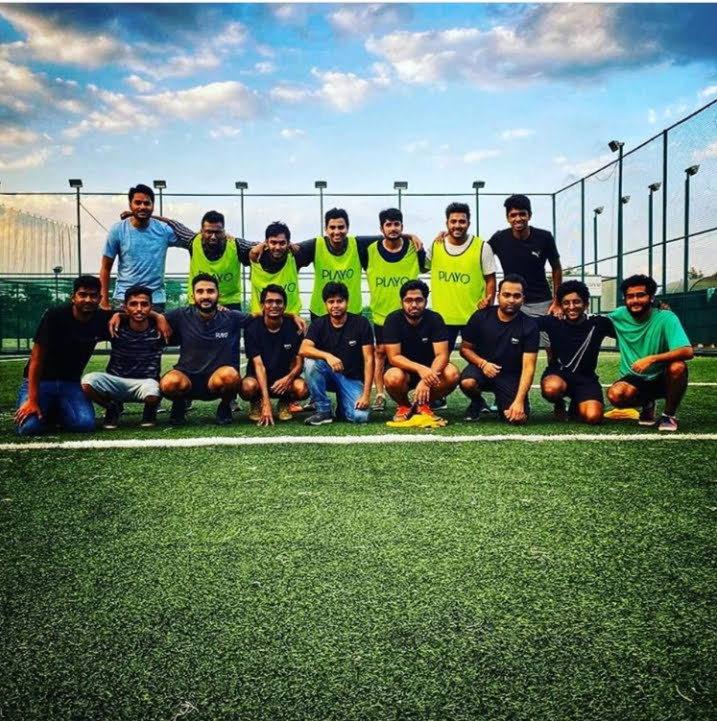

Professional Experience
Cognizant – Sr. Associate (QA Lead)
Kaluza (Energy Domain)
- Leading QA team in Kaluza project.
- Automation with Journey Test Runner (JTR) written in Jest.
- Monitoring regression with JTR dashboards.
- Tools: Datadog for logs, Postman for API testing, Cypress (JS/TS) for UI automation.
- CI/CD integration with Jenkins, execution on GCP.
- Regularly demoing new Journeys to clients in sprint demos.
- Focus on both frontend and backend testing (manual & automation).
- Frontend automation with Cypress Framework.
- API automation using Jest Framework and GraphQL for mutations & queries.
- Collaborate with developers, product managers, and stakeholders to understand features, user stories, and app changes.
- Participate in Agile ceremonies: stand-ups, status calls, refinement meetings, sprint planning, 3 AMIGOS meetings, demo planning, demo meetings, retrospectives, and informal connect sessions.
- Participate in QA showcases and demo meetings to present innovations and project progress to clients.
SIERRA (Ford)
- Handled frontend and backend testing using Cypress and Postman.
- Both manual and automated API testing for project deliverables.
- Collaborated with developers, PMs, and stakeholders to understand requirements and application changes.
- Active participation in Agile ceremonies and demo meetings.
Playo – QA Engineer, QA Lead
- Built scalable Cypress automation framework with Git + Jenkins.
- Led QA efforts ensuring high availability under sports-tech traffic.
- Conducted performance testing and regression cycles.
- Engaged with users and stakeholders during app feature launches.

Tracxn – QA Engineer
- Manual and functional testing of enterprise-grade SaaS products.
- Exposure to early-stage automation with Selenium and Postman.